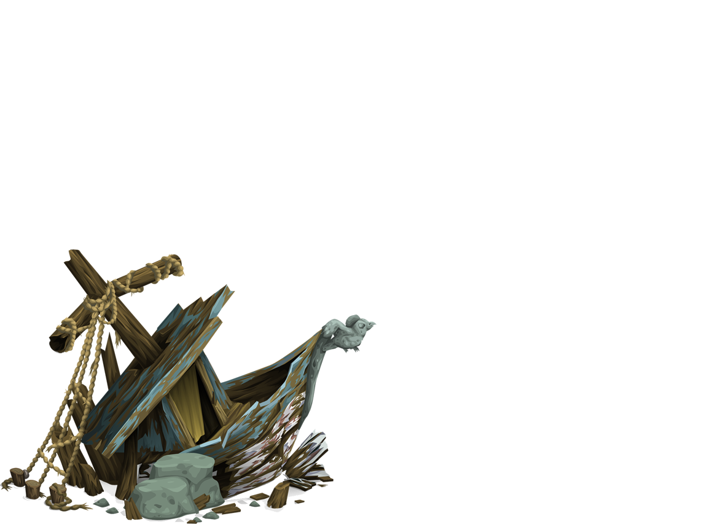

Fight against
HUNGER


Edward Thatch was born 1680 in Bristol, Kingdom of England, also known as the Blackbeard. He is an English pirate who operated around the Indies and the eastern coast of Britain's north American colonies.
At the end of Queen Anne's War (1702–1713, one of several French and Indian Wars fought in North America), Blackbeard served as a crewman aboard the ship of the legendary English privateer Benjamin Hornigold. Privateers were people who were hired by one side of a naval war to do damage to the opposing fleet, and take whatever booty was available as the reward. Hornigold saw potential in young Edward Teach and promoted him, eventually giving Teach his own command as captain of a captured ship.
The two were very successful while they worked together. Hornigold lost his ship to a mutinous crew, and Blackbeard set out on his own. Hornigold eventually accepted a pardon and became a pirate-hunter.
Cause of Death: Killed in action (1718)
John Roberts was born 1682 in Casnewydd Bach, better known as Bartholomew Roberts. Roberts was enslaved and forced to bemuse one of the pirates. However, this did not bother him much because he soon realized this trade suited him well. Roberts was an attractive, tall man who enjoyed nice clothes and expensive jewelry. As a pirate, he had an opportunity not only to be famous but also rich.
Bartholomew Roberts’ life was colorful and exciting. Between 1719 and he captured as many as 400 ships, including many superior warships. This made him the most wealthy and feared pirate of the Golden Age.
Cause of Death: Was killed by grapeshot (1722)
Henry Avery or Jack Avery was born 1659 in Newton Ferrers, Devon, England. An English pirate who captured a fantastic treasure ship belonging to the Mogul of India in 1695 and then disappeared.
Avery was a legend during his lifetime and for a while thereafter. He embodied the dream of all pirates to make a huge score and then retire, preferably with an adoring princess and a large pile of loot.
He took in more loot in two years than pirates such as Blackbeard, Captain Kidd, Anne Bonny and "Calico Jack" Rackham—combined.
Cause of Death: Unknown (1696)
Zheng Shi born as Shi Yang in 1775 also known as Ching Shih, was a Chinese prostitute who became a powerful female pirate, controlling the infamous Red Flag Fleet. In the year 1801, Zheng Yi, a notorious pirate commander of the infamous Red Flag Fleet, encountered Ching Shih in the Cantonese port and was enthralled by her beauty.
Yi proposed to Shih, however the nature of the event itself remains a source of speculation. Some say Yi ordered a raid on the bordello and captured his concubine, while others retain Yi simply asked Shih to marry him.
The couple only possessed 200 ships at the time of their marriage, but a coalition with powerful Cantonese pirate forces would soon allow the Red Flag Fleet to comprise somewhere between 1700 and 1800 ships. These combined efforts would result in a color-coded fleet of ships, led by the “Red Flag,” and followed by convoys labeled Black, White, Blue, Yellow, and Green.
Cause of Death: Died in typhoon (1807)
Captain Samuel was born in 1689 , later ater known as "Black Sam" Bellamy, was an English sailor, turned pirate, who operated in the early 18th century. He was British and began his life of piracy as a crew member of Captain Benjamin Hornigold, active in the Caribbean and North Atlantic from 1716 to 1717.
Hornigold died in a shipwreck off the coast of Mexico in 1719. Bellamy, meanwhile, continued to sail under the black flag, and he was voted by Hornigold’s crew to be their new pirate leader.
Operating for just one year from 1716 to 1717, Black Sam Bellamy captured 53 ships and plundered $140 million worth of treasure, dividing it equally among his crew.
Cause of Death: Drowned (1717)
Hayreddin was born to a converted Muslim Yakup Aga of Turkish origin and his Christian Greek mother Katerina in the late 1470s or the early 1480s. Barbarossa also known as "Redbeard" and he was one of the most successful naval commanders of the Ottoman Empire in the 16th century.
Hayreddin Barbarossa was the most feared Ottoman Chief Admiral of the 16th Century who gave the Italians and Spaniards a tough time throughout his life.
Barbossa was depicted as a wicked man, full of greed and killing people for his gains. However, the true Barbarossa was a different man.
Hayreddin Barbarossa operated in the Mediterranean seas in the 16th century as a corsair from his base in Algiers. The Europeans feared his seamanship, his tactics of naval battles, and his skills as a warrior. He bravely sacked ports, captured ships from Spain and Italy who were out on the mission to capture Algiers and other parts of North Africa.
Cause of Death: Drowned in the river Saleph while leading an army to Jerusalem (1190)
Sir Francis Drake was an English explorer, sea captain, privateer, slave trader, naval officer, and politician. He was born in year 1540, Tavistock, Devon, England.
By the 1560s, Drake was given command of his own ship, the Judith. With a small fleet, Drake and his cousin, John Hawkins, sailed to Africa and worked illegally as slave traders. They then sailed to New Spain to sell their captives to settlers, an action that was against Spanish law.
In 1577, Queen Elizabeth commissioned Drake to lead an expedition around South America through the notoriously stormy Straits of Magellan. The voyage was plagued by conflict between Drake and the two other men tasked with sharing command.
When they arrived off the coast of Argentina, Drake had one of the men–Thomas Doughty–arrested, tried and beheaded for allegedly plotting a mutiny. Of the five-ship fleet, two ships were lost in a storm; the other commander, John Wynter, turned one back to England and another disappeared. Drake’s 100-ton flagship, the Pelican (which he later renamed Golden Hind), was the only vessel to reach the Pacific, in October 1578.
Cause of Death: Dysentery in Portobelo harbour, Panama (1596)